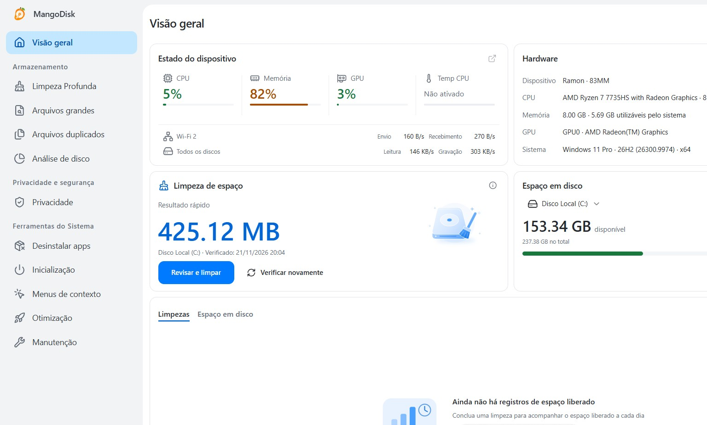
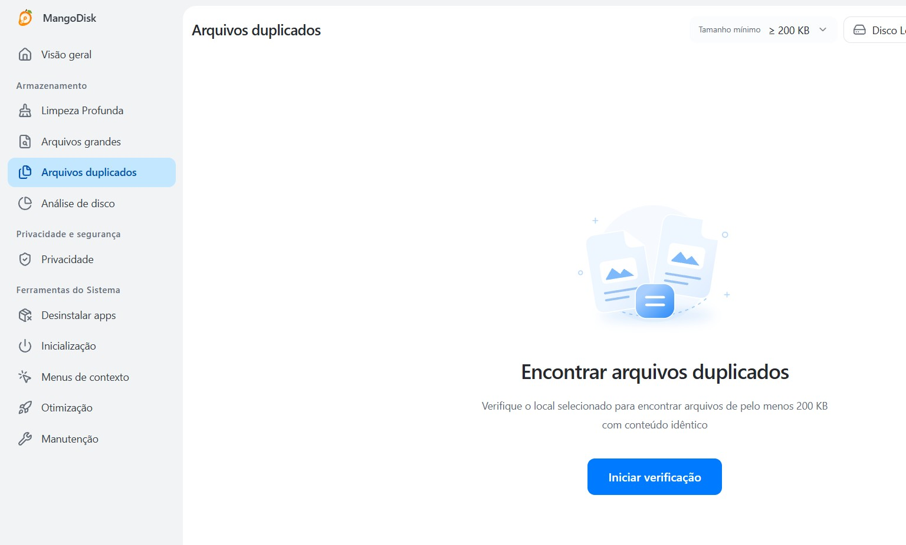
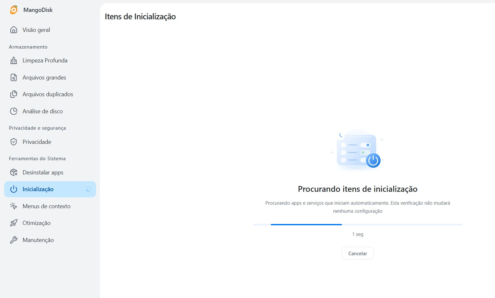
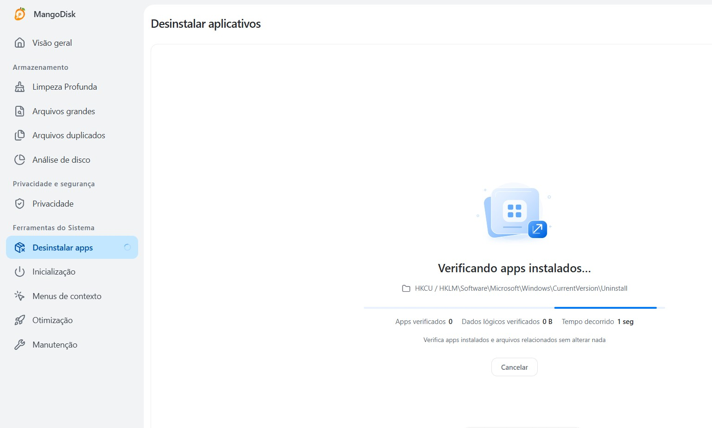
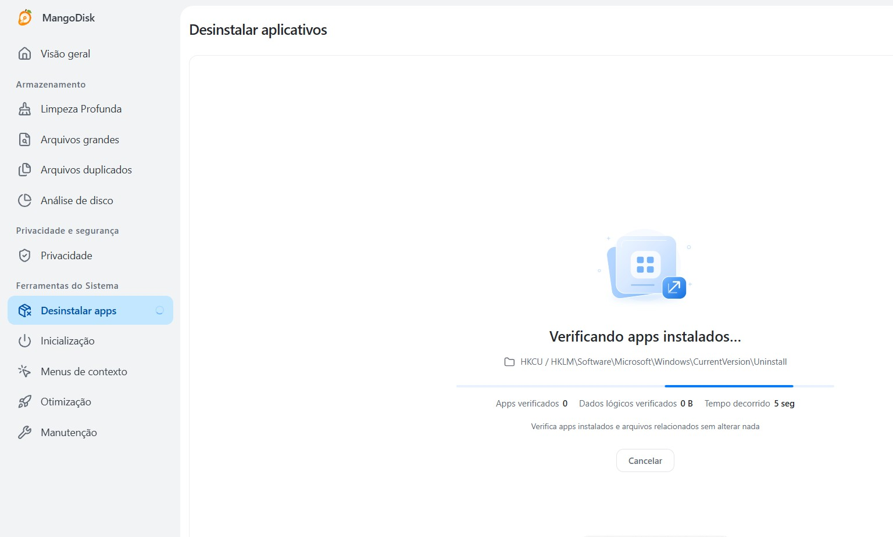

Limpeza profunda
1,3× mais rápidoLibera 24,5 GB a mais
Veja o que está ocupando espaço, remova o que não precisa e mantenha o computador funcionando bem.

Descubra o que está ocupando espaço no disco. Abra pastas para explorar o conteúdo e encontrar os arquivos grandes.

Veja CPU, memória, rede e atividade de disco na bandeja do sistema do Windows ou em um monitor flutuante, com layouts horizontais e verticais.

Não sabe para que serve um arquivo ou cache? Receba uma explicação gerada por IA do que ele faz e de como a remoção pode afetar seus aplicativos. Confira os detalhes e decida o que limpar.
Analise um disco ou uma pasta para encontrar arquivos que podem ser limpos.
Confira os locais e os riscos dos arquivos. Use as explicações por IA quando tiver dúvida.
Escolha o que remover e revise a lista antes de limpar.
A varredura e a limpeza acontecem no seu computador. Você pode revisar as ações anteriores no Histórico.
Conheça as explicações por IA
Compare tempos de varredura e resultados obtidos no mesmo computador e nas mesmas pastas.
Além da limpeza, gerencie aplicativos, apague históricos de uso e resolva problemas comuns do sistema.
Telas reais do aplicativo em português, nos temas claro e escuro.






Baixe o MangoDisk para recuperar o espaço ocupado por arquivos indesejados. Gratuito, de código aberto e sem cadastro.
Explore o código, relate um problema ou ajude a melhorar o MangoDisk.
Ver no GitHub